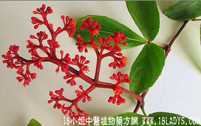

独脚乌扣(中药材植物名:白粉藤)(植物科目:葡萄科)

别名：白粉藤。
植物名：白粉藤。
生长环境：本品为草质藤本。蔓生于旷野或灌木丛中，山地极少见。
分布：广东中部和南部、广西，此外亚洲热带地区亦有分布。
入药部分：根。
采集期：春季为多，夏、秋亦有。
自采地点：郊外。
性味：性凉、味微苦。
功能：清热散毒止痛（叶、外敷皮肤有刺激性）。
主治、用量和用法：1、红肿痈疮：生用适量，加片糖捣烂，敷患处；2、疮疖：用法同上；3、蛇头缠指：用法同上。
验方：（治皮肤生蛇放）独脚乌扣根5钱、九层塔3钱、七星剑3钱、入地金牛根5钱、清水三碗煎成一碗服。
（方解）方中独脚乌扣根清凉解毒，九层塔疏风止痒，七星剑散湿毒，入地金牛止痛消肿，更能行气血，通经络，以助消散，为皮肤生蛇良方。
（方歌）生蛇痛痒实堪忧，独脚乌扣入地牛，七星剑挥九层塔，清除湿毒病自休。
附录：（叶）1、治痈疮；2、治蛇头缠指；3、治石啃，均用鲜叶捣烂敷患处。
参考资料：独脚乌扣有两种：一种生于大山，别名为“红远乌扣”，又名“穿钱独脚乌扣”，但市面上已少见；另一种即本品，生于湿草地，效力较差，其根茎名“白粉藤”。